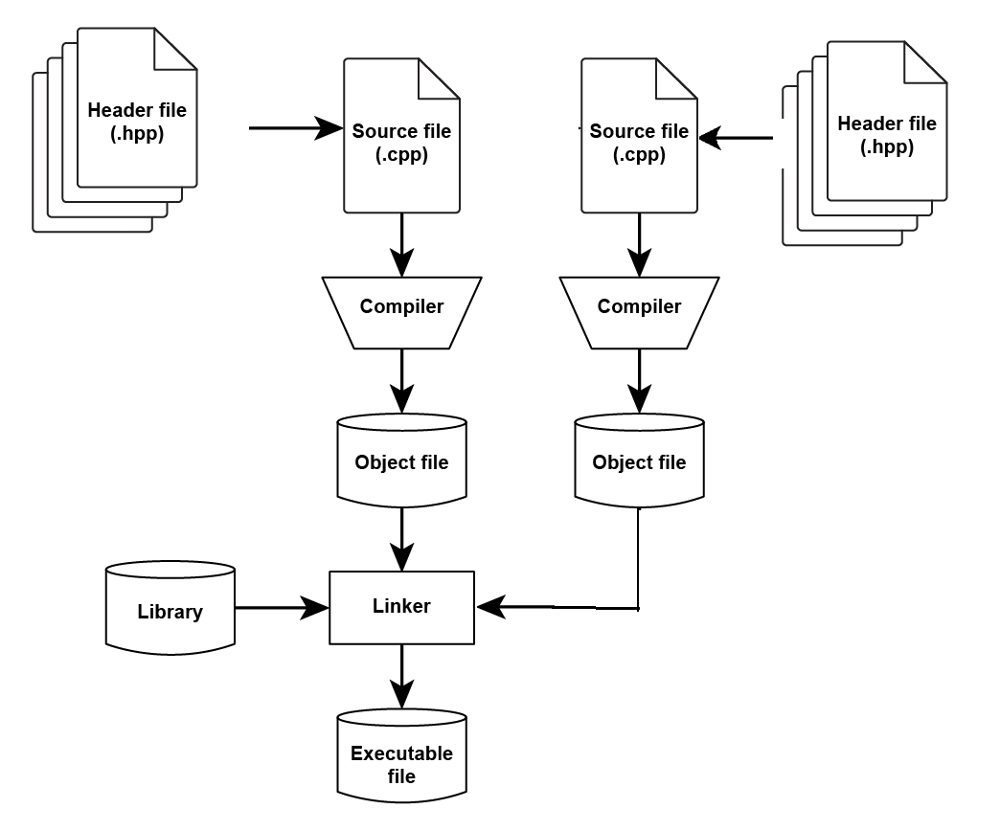

# PHYS4070: ## Computational Physics II <br> ### L01: Introduction to Computational Physics II [_Slides: broberts.io/live-slides/phys4070/L01-intro_](https://www.broberts.io/live-slides/phys4070/L01-intro) <br><br> ### Ben Roberts * Atomic structure theory, particle astrophysics * b.roberts@uq.edu.au, Room 6-427 <br><br> University of Queensland, Semester 1 2025 Tuesday, 25/02/2025
# Why computational physics <br><br> * Many (most) problems in physics cannot be solved exactly, even in theory * Many problems are simply too big/complex to solve without computers <!-- * New experiments: ridiculous amounts of data * e.g., LHC: ~ 1 PB ~ 1000 TB per second! (beam on) * e.g., LIGO: ~ 10 TB per day (always) --> <br><br> ### Why PHYS4070: * Not just a course on _using_ code/computers for problems * Aim to give deeper understand of how to design code for scientific computing * Allow you to solve real-world problems
# Course overview ## Lecture: 1hr * Cover physics, mathematical concepts required for projects <br><br> ## Computer labs: 2 x 2hr * Worksheets - designed to introduce you to: * computational methods required * specific C++ tools we'll use * Not directly assessed * But: highly geared towards projects <br><br> ## Assessment: 4 large projects * 10%, 20%, 35% 35% * Marked on: code, profesional report, and code quality * These are not easy, and will require significant amount of work * Keep in mind: there's no exam and no other assesment
# Topics ## Basic ODEs * Model simple n-body problem using Runge-Kutta methods <br><br> ## Monte-Carlo, statistical mechanics * Model phase transitions and the Ising model using Monte-Carlo techniques * Introduce basic parallelisation using openMP <br><br> ## Atomic physics: hydrogen to many-electron * Hartree-Fock model, iterative methods, perturbation theory * Solve ODE, eigenvalue problems, numerical integration <br><br> ## Many-body quantum, PDEs, exact diagonalisation * Model dynamics of Bose-Einstein condensates using Runge-Kutta methods * Explore properties of a quantum many-body system (the transverse-field Ising model)
# Quick note on plagiarism <br><br> <!-- ## ok --> * Comparing/discussing answers is encouraged * solving problems with others and working in groups is good * However, copy and paste from others OR the internet is not. <br> ## Stackoverflow, internet sources * Copying small code snippets, e.g., for syntax is fine. * Copying large chunks of someone else's solution is not. * If you copy and paste and then cosmetically change the code this is also plagiarism. * Use your judgement <br> ## Provided examples * You may use any of examples we explicitly give you in the labs etc. * Plus many examples: [github.com/benroberts999/cpp-cheatsheet](https://www.github.com/benroberts999/cpp-cheatsheet) <br> ## AI * Great for debugging small code snippets, not great at solving large problems
# Language: C++ <br> <div style="text-align: left; float: left; width: 65%"> <br> <h3> • What's current experience?</h3> <h3> • Anything required will be covered in labs/provided</h3> <br> <h2>"Modern" C++</h2> <h3> • Means at least c++11</h3> <h3> • You can use up to c++17 on smp-teachning</h3> <h3> • Most differences are minor</h3> <h3> • Some very helpful features that make things easier</h3> <br> <h2>smp-teaching</h2> <h3> • get it set up in first lab</h3> <h3> • Or, use your own device</h3> </div> <div style="text-align: center; float: right; width: 30%"> <br> <img src="img/c++.png" style="width: 90%"> </div>
# Info/resources
## cpp "cheet-sheet": * [github.com/benroberts999/cpp-cheatsheet](https://www.github.com/benroberts999/cpp-cheatsheet) * A list of simple and advanced examples: free to use. <br><br><br><br><br><br> ## Online tutorials: * Highly reccomend: [hackingcpp.com](https://hackingcpp.com/) * [hackingcpp.com/cpp/beginners_guide](https://hackingcpp.com/cpp/beginners_guide.html)
## Technical Documentation: 1. [cppreference.com/](https://en.cppreference.com/w/) * Very thorough, often not beginner friendly 2. [cplusplus.com/](https://cplusplus.com/) * also great, beginner friendly, many examples <br><br><br> ## Book: * Book: Dmitrović, S.F (2020). Modern C++ for Absolute Beginners
# CompilerExplorer: This example: [godbolt.org/z/6nzE34fKP](https://godbolt.org/z/6nzE34fKP) <div style="text-align: left; float: center; width: 75%"> <div class="sl-block" data-block-type="iframe" style="width: 100%; height: 80%"> <div class="sl-block-content" style="border-width: 1px;"> <iframe allowfullscreen allow="fullscreen" sandbox="allow-forms allow-scripts allow-popups allow-same-origin allow-pointer-lock allow-presentation" data-preload="true" data-lazy-loaded data-src="https://godbolt.org/e?hideEditorToolbars=true#g:!((g:!((g:!((h:codeEditor,i:(filename:'1',fontScale:24,fontUsePx:'0',j:1,lang:c%2B%2B,selection:(endColumn:1,endLineNumber:1,positionColumn:1,positionLineNumber:1,selectionStartColumn:1,selectionStartLineNumber:1,startColumn:1,startLineNumber:1),source:'%23include+%3Ciostream%3E%0A%0Aint+main()+%7B+%0A++std::cout+%3C%3C+%22Hello+phys4070+class!!%5Cn%22%3B%0A%7D'),l:'5',n:'0',o:'C%2B%2B+source+%231',t:'0')),k:51.984564498346195,l:'4',m:100,n:'0',o:'',s:0,t:'0'),(g:!((h:executor,i:(argsPanelShown:'1',compilationPanelShown:'0',compiler:gsnapshot,compilerOutShown:'0',execArgs:'',execStdin:'',fontScale:24,fontUsePx:'0',j:1,lang:c%2B%2B,libs:!(),options:'',source:1,stdinPanelShown:'1',tree:'1',wrap:'1'),l:'5',n:'0',o:'Executor+x86-64+gcc+(trunk)+(C%2B%2B,+Editor+%231)',t:'0')),header:(),k:48.015435501653805,l:'4',m:100,n:'0',o:'',s:0,t:'0')),l:'2',n:'0',o:'',t:'0')),version:4"></iframe> </div></div> </div>
# Why C++? <br> <div style="text-align: left; float: left; width: 65%"> <h2> • Why <i>use</i> C++?</h1> <br> <h2> • Why <i>learn</i> C++?</h1> <br> <h2> • Why <i>not</i> C++ (drawbacks/downsides)?</h1> </div> <div style="text-align: center; float: right; width: 20%"> <br> <img src="img/c++.png" style="width: 70%"> </div>
# Why _use_ C++? <br> <div style="text-align: left; float: left; width: 80%"> <h3> • Fast/powerful language with predictable resource control</h3> <h3> • "direct"* map to hardware</h3> <br> <h3> • Back-compatible with C and older C++ versions</h3> <h3> • Every* valid C program is a valid C++ program</h3> <br> <h3> • Has a well-defined standard + large standard library </h3> <h3> • (algorithm, numeric etc.)</h3> <br> <h3> • Multi-paradigm (generic, functional, object-oriented, data-o, etc.) </h3> <h3> • High-level language with low-level control</h3> <h4> • Propaganda: <i>"High level language that leaves no room for a lower-level one"</i></h4> <h4> • Propaganda: <i>"Zero-cost abstraction"</i></h4> <h3> • Write nice high-level OO code, same(/better) performance as C or Fortran</h3> <br> <h3> • Directly interface with other languages (C, Fortran etc.) - LAPACK </h3> <h3> • Widely used: many experts, lots of existing programs/libraries etc.</h3> </div> <div style="text-align: center; float: right; width: 20%"> <br> <img src="img/c++.png" style="width: 70%"> </div>
# Why _learn_ C++? <br> <div style="text-align: left; float: left; width: 80%"> <h3> • Learning lower-level language gives understanding of many concepts</h3> <h3> • e.g., memory management</h3> <br> <h3> • A good understanding of C++ will make learning other languages easier</h3> <h3> • Give you a deeper understanding of computer science</h3> <h3> • Help you write better code, regardless of language</h3> <br> <h3> • Widely used and <b>highly valued</b> in computer science and industry</h3> </div> <div style="text-align: center; float: right; width: 20%"> <br> <img src="img/c++.png" style="width: 70%"> </div>
# Downsides? ### Many of the above also come with drawbacks.. <br> <div style="text-align: left; float: left; width: 80%"> <h3> • <b>HUGE</b> language, with many features</h3> <h3> • Can be confusing/overwhelming</h3> <h3> • Many features are rarely used</h3> <br> <h3> • Many old, obsolete features (for back-compatiblity)</h3> <h3> • Can make it difficult to learn, especially from old sources</h3> <!-- <h3> • Often old/bad/outdated "advice" on the internet</h3> --> <br> <h3> • Very powerful: can be easy to shoot yourself in the foot</h3> <h3> • It will happily let you do almost anything.. including very bad ideas [<a href="https://godbolt.org/z/4xG8asb7P">e.g.</a>] </h3> <br> <h3> • Quite verobse</h3> <h3> • Often requires more code/typing than other languages</h3> <h3> • This becomes less of an issue with time and for large projects</h3> <br> <h3> • Designed for large-scale projects</h3> <h3> • Can seem overly-combersome for small projects</h3> </div> <div style="text-align: center; float: right; width: 20%"> <br> <img src="img/c++.png" style="width: 70%"> </div>
<br><br><br><br><br><br><br><br> # Part II: Writing good code
# Example: good/bad? <br> <br> <div style="text-align: left; float: left; width: 40%"> <div class="sl-block" data-block-type="code" style="width: 40%; height: auto;"> <div class="sl-block-style"> <div class="sl-block-content notranslate" data-highlight-theme="ir-black" style="border-style: solid; border-width: 1px;" data-code-frame="none" data-code-autoheight="true"> <pre class="cpp" style="font-size: 24px; line-height: 32px;"><code style="padding: 20px;" data-line-numbers="" >double f(double x, double y) { double a, b, c; a = (4.0 / 3) * M_PI * x * x * x; b = (4.0 / 3) * M_PI * x * y * y; c = a - b; if (c > 0.0) { return c; } else { return -c; } } </code></pre></div></div></div> </div> <div style="text-align: left; float: right; width: 55%"> <div class="fragment"> <h2>Bad!</h2> </div> <br> <div class="fragment"> <h3> • Uninitialised variables</h3> <h3> • Hard to follow/debug: common source of error!</h3> </div> <br> <div class="fragment"> <h3> • Code transcription; copy/paste errors</h3> <h3> • Extra work, hard to maintain, 2x probability of error</h3> </div> <br> <div class="fragment"> <h3> • Unclear naming</h3> <h3> • Confusing, hard to understand</h3> </div> </div>
# Example: good/bad? <br> <br> <div style="text-align: left; float: left; width: 50%"> <div class="sl-block" data-block-type="code" style="width: 50%; height: auto;"> <div class="sl-block-style"> <div class="sl-block-content notranslate" data-highlight-theme="ir-black" style="border-style: solid; border-width: 1px;" data-code-frame="none" data-code-autoheight="true"> <pre class="cpp" style="font-size: 24px; line-height: 32px;"><code style="padding: 20px;" data-line-numbers="" >double sphere_volume(double radius) { return (4.0 / 3) * M_PI * std::pow(radius, 3); } double volume_difference(double radius1, double radius2) { const double volume1 = sphere_volume(radius1); const double volume2 = sphere_volume(radius2); return std::abs(volume1 - volume2); } </code></pre></div></div></div> </div> <div style="text-align: left; float: right; width: 45%"> <div class="fragment"> <h2>Good</h2> <br> <h3> • Variables defined + initialised where used</h3> <br> <h3> • Makes use of named functions</h3> <br> <h3> • Clear variable naming</h3> </div> </div>
## Game: Raise your hand when you know what this code does <div class="sl-block" data-block-type="code" style="width: 80%; height: auto;"> <div class="sl-block-style"> <div class="sl-block-content notranslate" data-highlight-theme="ir-black" style="border-style: solid; border-width: 1px;" data-code-frame="none" data-code-autoheight="true"> <pre class="cpp" style="font-size: 24px; line-height: 32px;"><code style="padding: 20px;" data-line-numbers=""> double a[][3] = { {1.0, 0.2, 0.1}, {0.6, 3.0, -0.1}, {0.2, 0.4, 6.1} }; double b[] = {4.0, 5.3, 2.8}; double d = 0.0; for (int i = 0; i < 3; i++) { d += a[0][i] * (a[1][(i + 1) % 3] * a[2][(i + 2) % 3] - a[1][(i + 2) % 3] * a[2][(i + 1) % 3]); } double ia[3][3]; for (int i = 0; i < 3; i++) { for (int j = 0; j < 3; j++) { ia[i][j] = ((a[(j + 1) % 3][(i + 1) % 3] * a[(j + 2) % 3][(i + 2) % 3]) - (a[(j + 1) % 3][(i + 2) % 3] * a[(j + 2) % 3][(i + 1) % 3])) / d; } } double x[3] = {0.0, 0.0, 0.0}; for (int i = 0; i < 3; i++) { for (int j = 0; j < 3; j++) { x[i] += ia[i][j] * b[j]; } } </code></pre></div></div></div>
## Game: Raise your hand when you know what this code does <div class="sl-block" data-block-type="code" style="width: 80%; height: auto;"> <div class="sl-block-style"> <div class="sl-block-content notranslate" data-highlight-theme="ir-black" style="border-style: solid; border-width: 1px;" data-code-frame="none" data-code-autoheight="true"> <pre class="cpp" style="font-size: 24px; line-height: 32px;"><code style="padding: 20px;" data-line-numbers="">// Initialise matrix A, and vector b double a[][3] = { {1.0, 0.2, 0.1}, {0.6, 3.0, -0.1}, {0.2, 0.4, 6.1} }; double b[] = {4.0, 5.3, 2.8}; double d = 0.0; for (int i = 0; i < 3; i++) { d += a[0][i] * (a[1][(i + 1) % 3] * a[2][(i + 2) % 3] - a[1][(i + 2) % 3] * a[2][(i + 1) % 3]); } double ia[3][3]; for (int i = 0; i < 3; i++) { for (int j = 0; j < 3; j++) { ia[i][j] = ((a[(j + 1) % 3][(i + 1) % 3] * a[(j + 2) % 3][(i + 2) % 3]) - (a[(j + 1) % 3][(i + 2) % 3] * a[(j + 2) % 3][(i + 1) % 3])) / d; } } double x[3] = {0.0, 0.0, 0.0}; for (int i = 0; i < 3; i++) { for (int j = 0; j < 3; j++) { x[i] += ia[i][j] * b[j]; } } </code></pre></div></div></div>
## Game: Raise your hand when you know what this code does <div class="sl-block" data-block-type="code" style="width: 80%; height: auto;"> <div class="sl-block-style"> <div class="sl-block-content notranslate" data-highlight-theme="ir-black" style="border-style: solid; border-width: 1px;" data-code-frame="none" data-code-autoheight="true"> <pre class="cpp" style="font-size: 24px; line-height: 32px;"><code style="padding: 20px;" data-line-numbers="">// Initialise matrix A, and vector b double a[][3] = { {1.0, 0.2, 0.1}, {0.6, 3.0, -0.1}, {0.2, 0.4, 6.1} }; double b[] = {4.0, 5.3, 2.8}; // Calculate determinant of matrix A double d = 0.0; for (int i = 0; i < 3; i++) { d += a[0][i] * (a[1][(i + 1) % 3] * a[2][(i + 2) % 3] - a[1][(i + 2) % 3] * a[2][(i + 1) % 3]); } double ia[3][3]; for (int i = 0; i < 3; i++) { for (int j = 0; j < 3; j++) { ia[i][j] = ((a[(j + 1) % 3][(i + 1) % 3] * a[(j + 2) % 3][(i + 2) % 3]) - (a[(j + 1) % 3][(i + 2) % 3] * a[(j + 2) % 3][(i + 1) % 3])) / d; } } double x[3] = {0.0, 0.0, 0.0}; for (int i = 0; i < 3; i++) { for (int j = 0; j < 3; j++) { x[i] += ia[i][j] * b[j]; } } </code></pre></div></div></div>
## Game: Raise your hand when you know what this code does <div class="sl-block" data-block-type="code" style="width: 80%; height: auto;"> <div class="sl-block-style"> <div class="sl-block-content notranslate" data-highlight-theme="ir-black" style="border-style: solid; border-width: 1px;" data-code-frame="none" data-code-autoheight="true"> <pre class="cpp" style="font-size: 24px; line-height: 32px;"><code style="padding: 20px;" data-line-numbers="">// Initialise matrix A, and vector b double a[][3] = { {1.0, 0.2, 0.1}, {0.6, 3.0, -0.1}, {0.2, 0.4, 6.1} }; double b[] = {4.0, 5.3, 2.8}; // Calculate determinant of matrix A double d = 0.0; for (int i = 0; i < 3; i++) { d += a[0][i] * (a[1][(i + 1) % 3] * a[2][(i + 2) % 3] - a[1][(i + 2) % 3] * a[2][(i + 1) % 3]); } // Find inverse of matrix A double ia[3][3]; for (int i = 0; i < 3; i++) { for (int j = 0; j < 3; j++) { ia[i][j] = ((a[(j + 1) % 3][(i + 1) % 3] * a[(j + 2) % 3][(i + 2) % 3]) - (a[(j + 1) % 3][(i + 2) % 3] * a[(j + 2) % 3][(i + 1) % 3])) / d; } } double x[3] = {0.0, 0.0, 0.0}; for (int i = 0; i < 3; i++) { for (int j = 0; j < 3; j++) { x[i] += ia[i][j] * b[j]; } } </code></pre></div></div></div>
## Game: Raise your hand when you know what this code does <div class="sl-block" data-block-type="code" style="width: 80%; height: auto;"> <div class="sl-block-style"> <div class="sl-block-content notranslate" data-highlight-theme="ir-black" style="border-style: solid; border-width: 1px;" data-code-frame="none" data-code-autoheight="true"> <pre class="cpp" style="font-size: 24px; line-height: 32px;"><code style="padding: 20px;" data-line-numbers="">// Initialise matrix A, and vector b double a[][3] = { {1.0, 0.2, 0.1}, {0.6, 3.0, -0.1}, {0.2, 0.4, 6.1} }; double b[] = {4.0, 5.3, 2.8}; // Calculate determinant of matrix A double d = 0.0; for (int i = 0; i < 3; i++) { d += a[0][i] * (a[1][(i + 1) % 3] * a[2][(i + 2) % 3] - a[1][(i + 2) % 3] * a[2][(i + 1) % 3]); } // Find inverse of matrix A double ia[3][3]; for (int i = 0; i < 3; i++) { for (int j = 0; j < 3; j++) { ia[i][j] = ((a[(j + 1) % 3][(i + 1) % 3] * a[(j + 2) % 3][(i + 2) % 3]) - (a[(j + 1) % 3][(i + 2) % 3] * a[(j + 2) % 3][(i + 1) % 3])) / d; } } // Solve matrix equation: Ax = b, via x = A^-1 * b double x[3] = {0.0, 0.0, 0.0}; for (int i = 0; i < 3; i++) { for (int j = 0; j < 3; j++) { x[i] += ia[i][j] * b[j]; } } </code></pre></div></div></div>
<br><br><br><br><br><br> ## Did the comments help? <br><br> ### Lesson: comment your code?
## What about this time: <div class="sl-block" data-block-type="code" style="width: 80%; height: auto;"> <div class="sl-block-style"> <div class="sl-block-content notranslate" data-highlight-theme="ir-black" style="border-style: solid; border-width: 1px;" data-code-frame="none" data-code-autoheight="true"> <pre class="cpp" style="font-size: 24px; line-height: 32px;"><code style="padding: 20px;" data-line-numbers=""> Matrix A{1.0, 0.2, 0.1, 0.6, 3.0, -0.1, 0.2, 0.4, 6.1}; Vector b{4.0, 5.3, 2.8}; Matrix inverse_A = invert_matrix(A); Vector x = inverse_A * b; </code></pre></div></div></div>
## What about this time: <div class="sl-block" data-block-type="code" style="width: 80%; height: auto;"> <div class="sl-block-style"> <div class="sl-block-content notranslate" data-highlight-theme="ir-black" style="border-style: solid; border-width: 1px;" data-code-frame="none" data-code-autoheight="true"> <pre class="cpp" style="font-size: 24px; line-height: 32px;"><code style="padding: 20px;" data-line-numbers="">// initialise a matrix A, and vector b Matrix A{1.0, 0.2, 0.1, 0.6, 3.0, -0.1, 0.2, 0.4, 6.1}; Vector b{4.0, 5.3, 2.8}; // calculate the inverse of matrix A Matrix inverse_A = invert_matrix(A); // solve Ax = b, by x = A^-1 * b Vector x = inverse_A * b; </code></pre></div></div></div> <br><br><br><br><br><br><br><br><br><br><br><br> <div class = "fragment"> <h2>Did the comments help this time?</h2> </div> <br><br> <div class = "fragment"> <h3> • Encapsulation and well-named functions, variables:</h3> <h3> • <b>Way</b> more important than comments</h3> </div>
## Key points/principles <div> <div class="fragment"> <h3>Name things well</h3> <ul> <li>Code with empathy: someone else will have to understand what you’ve done</li> <ul> <li>90% of the time, that person is future you (Except in this course... when it’s me)</li> </ul> </ul> </div> <br><br> <div class="fragment"> <h3>Don't be surprising; Don't <em>lie</em> with your code</h3> <ul> <li>Principle of Least Astonishment: code should behave as <em>someone else</em> would expect</li> <li>Names should reflect what code <em>actually</em> does! ; Uninitialised variables are lies.</li> <ul> <li><em>"This function is called `invert_matrix()`, but it actually calculates the determinant"</em>. NO.</li> </ul> </ul> </div> <br><br> <div class="fragment"> <h3>Prefer small, dedicated functions/classes to massive monoliths</h3> <ul> <li>Encapsulation: helps readability, debugging, maintainability</li> <li>SRP (Single Responsibility Principle): each piece of code should do one thing and do it well</li> <li>DRY (Don't repeat yourself): avoid code duplication</li> </ul> </div> <br><br> <div class="fragment"> <h3>Minimal Working Model</h3> <ul> <li>Ensure code always compiles: add one tiny thing at a time</li> <li>Especially important for starting out</li> <li>(Version control)</li> </ul> </div> </div>
## Beyond the scope of this course, but important topics <br><br> ### Unit tests * Writing good scientific code means trustable code * Code cannot be trusted unless it is well tested * Unit tests: integral part of this <br><br> ### Version control * git / github: SMP workshop: week 4 <br><br> ### Code documentation * Maintaining good code required maintaining good documentaion <br><br> ### Tools: * linters/IDEs, analysis, debuggers * code auto-formatting and style
<br><br><br><br><br><br> # Part III: Crash course in C++
## Basics: functions, type, scope <div style="text-align: left; float: center; width: 75%"> <div class="sl-block" data-block-type="iframe" style="width: 100%; height: 80%"> <div class="sl-block-content" style="border-width: 1px;"> <iframe allowfullscreen allow="fullscreen" sandbox="allow-forms allow-scripts allow-popups allow-same-origin allow-pointer-lock allow-presentation" data-preload="true" data-lazy-loaded data-src="https://godbolt.org/e#g:!((g:!((g:!((h:codeEditor,i:(filename:'1',fontScale:24,fontUsePx:'0',j:1,lang:c%2B%2B,selection:(endColumn:2,endLineNumber:1,positionColumn:1,positionLineNumber:1,selectionStartColumn:1,selectionStartLineNumber:1,startColumn:1,startLineNumber:1),source:'%23include+%3Ciostream%3E%0A%0Adouble+my_function(double+x,+int+i)%3B%0A%0Aint+main()+%7B%0A++++std::cout+%3C%3C+%22Hellow+Wordl!!%5Cn%22%3B%0A%0A++++%7B%0A++++++++int+i+%3D+2%3B%0A++++%7D%0A++++//+std::cout+%3C%3C+i+%3C%3C+%22%5Cn%22%3B%0A%7D'),l:'5',n:'0',o:'C%2B%2B+source+%231',t:'0')),k:50.736314443460905,l:'4',m:100,n:'0',o:'',s:0,t:'0'),(g:!((h:executor,i:(argsPanelShown:'1',compilationPanelShown:'0',compiler:gsnapshot,compilerName:'',compilerOutShown:'0',execArgs:'',execStdin:'',fontScale:26,fontUsePx:'0',j:1,lang:c%2B%2B,libs:!(),options:'',overrides:!(),runtimeTools:!(),source:1,stdinPanelShown:'1',tree:'1',wrap:'1'),l:'5',n:'0',o:'Executor+x86-64+gcc+(trunk)+(C%2B%2B,+Editor+%231)',t:'0')),header:(),k:49.263685556539095,l:'4',m:100,n:'0',o:'',s:0,t:'0')),l:'2',n:'0',o:'',t:'0')),version:4"></iframe> </div></div> </div>
## Functions: pass by value(copy), reference, const, pointer <div style="text-align: left; float: center; width: 75%"> <div class="sl-block" data-block-type="iframe" style="width: 100%; height: 80%"> <div class="sl-block-content" style="border-width: 1px;"> <iframe allowfullscreen allow="fullscreen" sandbox="allow-forms allow-scripts allow-popups allow-same-origin allow-pointer-lock allow-presentation" data-preload="true" data-lazy-loaded data-src="https://godbolt.org/e#g:!((g:!((g:!((h:codeEditor,i:(filename:'1',fontScale:24,fontUsePx:'0',j:1,lang:c%2B%2B,selection:(endColumn:1,endLineNumber:1,positionColumn:1,positionLineNumber:1,selectionStartColumn:1,selectionStartLineNumber:1,startColumn:1,startLineNumber:1),source:'%23include+%3Ciostream%3E%0A%0Adouble+function_val(double+x)+%7B%0A++++x+*%3D+5%3B%0A++++return+x%3B%0A%7D%0A%0Adouble+function_ref(double+%26x)+%7B%0A++++x+*%3D+5%3B%0A++++return+x%3B%0A%7D%0A%0Adouble+function_cref(const+double+%26x)+%7B%0A++++//+x+*%3D+5%3B%0A++++return+x%3B%0A%7D%0A%0Aint+main()+%7B%0A++++double+a+%3D+1.0%3B%0A%0A++++double+b+%3D+function_val(a)%3B%0A++++std::cout+%3C%3C+%22a+%3D+%22+%3C%3C+a+%3C%3C+%22,+b+%3D+%22+%3C%3C+b+%3C%3C+%22%5Cn%22%3B%0A%0A++++double+c+%3D+function_ref(a)%3B%0A++++//+function_ref(a)%3B%0A++++std::cout+%3C%3C+%22a+%3D+%22+%3C%3C+a+%3C%3C+%22,+c+%3D+%22+%3C%3C+c+%3C%3C+%22%5Cn%22%3B%0A%7D'),l:'5',n:'0',o:'C%2B%2B+source+%231',t:'0')),k:50.736314443460905,l:'4',m:100,n:'0',o:'',s:0,t:'0'),(g:!((h:executor,i:(argsPanelShown:'1',compilationPanelShown:'0',compiler:gsnapshot,compilerName:'',compilerOutShown:'0',execArgs:'',execStdin:'',fontScale:26,fontUsePx:'0',j:1,lang:c%2B%2B,libs:!(),options:'',overrides:!(),runtimeTools:!(),source:1,stdinPanelShown:'1',tree:'1',wrap:'1'),l:'5',n:'0',o:'Executor+x86-64+gcc+(trunk)+(C%2B%2B,+Editor+%231)',t:'0')),header:(),k:49.263685556539095,l:'4',m:100,n:'0',o:'',s:0,t:'0')),l:'2',n:'0',o:'',t:'0')),version:4"></iframe> </div></div> </div>
## Classes (objects), operator overloading <div style="text-align: left; float: center; width: 75%"> <div class="sl-block" data-block-type="iframe" style="width: 100%; height: 80%"> <div class="sl-block-content" style="border-width: 1px;"> <iframe allowfullscreen allow="fullscreen" sandbox="allow-forms allow-scripts allow-popups allow-same-origin allow-pointer-lock allow-presentation" data-preload="true" data-lazy-loaded data-src="https://godbolt.org/e#g:!((g:!((g:!((h:codeEditor,i:(filename:'1',fontScale:24,fontUsePx:'0',j:1,lang:c%2B%2B,selection:(endColumn:13,endLineNumber:11,positionColumn:13,positionLineNumber:11,selectionStartColumn:13,selectionStartLineNumber:11,startColumn:13,startLineNumber:11),source:'%23include+%3Ciostream%3E%0A%0Aclass+Complex+%7B%0A+++public:%0A++++double+real%3B%0A++++double+imag%3B%0A%7D%3B%0A%0AComplex+operator%2B(Complex+a,+Complex+b)%3B%0A%0Aint+main()+%7B%0A++++Complex+z1%7B1.0,+0.5%7D%3B%0A++++Complex+z2%3B%0A++++z2.real+%3D+1.0%3B%0A++++z2.imag+%3D+0.5%3B%0A%7D'),l:'5',n:'0',o:'C%2B%2B+source+%231',t:'0')),k:50.736314443460905,l:'4',m:100,n:'0',o:'',s:0,t:'0'),(g:!((h:executor,i:(argsPanelShown:'1',compilationPanelShown:'0',compiler:gsnapshot,compilerName:'',compilerOutShown:'0',execArgs:'',execStdin:'',fontScale:26,fontUsePx:'0',j:1,lang:c%2B%2B,libs:!(),options:'',overrides:!(),runtimeTools:!(),source:1,stdinPanelShown:'1',tree:'1',wrap:'1'),l:'5',n:'0',o:'Executor+x86-64+gcc+(trunk)+(C%2B%2B,+Editor+%231)',t:'0')),header:(),k:49.263685556539095,l:'4',m:100,n:'0',o:'',s:0,t:'0')),l:'2',n:'0',o:'',t:'0')),version:4"></iframe> </div></div> </div>
## Vector, array <div style="text-align: left; float: center; width: 75%"> <div class="sl-block" data-block-type="iframe" style="width: 100%; height: 80%"> <div class="sl-block-content" style="border-width: 1px;"> <iframe allowfullscreen allow="fullscreen" sandbox="allow-forms allow-scripts allow-popups allow-same-origin allow-pointer-lock allow-presentation" data-preload="true" data-lazy-loaded data-src="https://godbolt.org/e#g:!((g:!((g:!((h:codeEditor,i:(filename:'1',fontScale:24,fontUsePx:'0',j:1,lang:c%2B%2B,selection:(endColumn:50,endLineNumber:6,positionColumn:50,positionLineNumber:1,selectionStartColumn:50,selectionStartLineNumber:1,startColumn:50,startLineNumber:1),source:'%23include+%3Carray%3E%0A%23include+%3Ccmath%3E%0A%23include+%3Ciostream%3E%0A%23include+%3Cvector%3E%0A%0Adouble+my_function(const+std::vector%3Cdouble%3E+%26x,+const+std::vector%3Cdouble%3E+%26y)%3B%0A%0Aint+main()+%7B%0A++++std::vector%3Cint%3E+a%7B1,+2,+3,+4,+5%7D%3B%0A%0A++++std::vector%3Cdouble%3E+b%3B%0A++++for+(int+i+%3D+0%3B+i+%3C+10%3B+%2B%2Bi)+%7B%0A++++++++b.push_back(std::pow(2.0,+i))%3B%0A++++%7D%0A%7D'),l:'5',n:'0',o:'C%2B%2B+source+%231',t:'0')),k:50.736314443460905,l:'4',m:100,n:'0',o:'',s:0,t:'0'),(g:!((h:executor,i:(argsPanelShown:'1',compilationPanelShown:'0',compiler:gsnapshot,compilerName:'',compilerOutShown:'0',execArgs:'',execStdin:'',fontScale:26,fontUsePx:'0',j:1,lang:c%2B%2B,libs:!(),options:'',overrides:!(),runtimeTools:!(),source:1,stdinPanelShown:'1',tree:'1',wrap:'1'),l:'5',n:'0',o:'Executor+x86-64+gcc+(trunk)+(C%2B%2B,+Editor+%231)',t:'0')),header:(),k:49.263685556539095,l:'4',m:100,n:'0',o:'',s:0,t:'0')),l:'2',n:'0',o:'',t:'0')),version:4"></iframe> </div></div> </div>
# C++ compilation model <!-- ### Many of the above also come with drawbacks.. --> <br> <div style="text-align: center; float: left; width: 40%"> <br>  </div> <div style="text-align: left; float: right; width: 60%"> <h2> Two-step compilation: </h2> <h3> • Each .cpp file <i>compiled</i> into an <i>object</i> file ("compilation unit")</h3> <h3> • Must be exactly one `main()` function among them</h3> <h3> • Object files (+libraries) are then <i>linked</i> to create executable</h3> <br><br> <h2> Why? For large projects: </h2> <h3> • Changes to single compilation unit: only re-compile that unit</h3> <h3> • Allows linking to pre-compiled libraries</h3> <br><br> <h2> Small projects: </h2> <h3> • Generally: just do all steps in one go</h3> </div>
# Basic example <br> <div style="text-align: left; float: left; width: 40%"> <div class="sl-block" data-block-type="code" style="width: 38%; height: auto;"> <div class="sl-block-style"> <div class="sl-block-content notranslate" data-highlight-theme="ir-black" style="border-style: solid; border-width: 1px;" data-code-frame="none" data-code-autoheight="true"> <pre class="cpp" style="font-size: 20px; line-height: 28px;"> <!-- <h3> main.cpp:</h3> --> <code style="padding: 20px;" data-line-numbers="">#include "functions1.hpp" #include "functions2.hpp" #include 〈iostream〉 int main() { //..... code which uses functions from other files } </code> <h3> functions1.hpp:</h3><code style="padding: 10px;" data-line-numbers="">// Declaration of functions double my_function_1(double in_1, double in_2); </code> <h3> functions1.cpp:</h3><code style="padding: 10px;" data-line-numbers="">#include "functions1.hpp" double my_function_1(double in_1, double in_2) { //definition of my_function_1 .... // Which uses functions from LAPACK library } </code> </pre></div></div></div> </div> <div style="text-align: left; float: right; width: 60%"> <div class = fragment> <h2> Two-step compilation: </h2> <br> <h3> • First, compile each compilation unit</h3> g++ -std=c++17 -O3 -c main.cpp -o main.o g++ -std=c++17 -O3 -c functions1.cpp -o functions1.o g++ -std=c++17 -O3 -c functions2.cpp -o functions2.o </div> <br> <div class = fragment> <h3> • Then, link objects + libraries</h3> g++ main.o functions1.o functions2.o -llapack -o my_program </div> <br><br> <div class = fragment> <h3> • Or, all together: </h3> g++ -std=c++17 -O3 main.cpp functions1.cpp functions2.cpp -llapack -o my_program </div> </div>
<br><br><br><br><br><br> ## (some intermediate topics)
## Classes: Constructors <div style="text-align: left; float: center; width: 75%"> <div class="sl-block" data-block-type="iframe" style="width: 100%; height: 80%"> <div class="sl-block-content" style="border-width: 1px;"> <iframe allowfullscreen allow="fullscreen" sandbox="allow-forms allow-scripts allow-popups allow-same-origin allow-pointer-lock allow-presentation" data-preload="true" data-lazy-loaded data-src="https://godbolt.org/e#g:!((g:!((g:!((h:codeEditor,i:(filename:'1',fontScale:24,fontUsePx:'0',j:1,lang:c%2B%2B,selection:(endColumn:12,endLineNumber:7,positionColumn:12,positionLineNumber:7,selectionStartColumn:12,selectionStartLineNumber:7,startColumn:12,startLineNumber:7),source:'%23include+%3Ciostream%3E%0A%0Aclass+Complex+%7B%0A+++public:%0A++++Complex(double+real,+double+imag)+%7B%7D%0A%0A+++private:%0A++++double+m_real%3B%0A++++double+m_imag%3B%0A%7D%3B%0A%0Aint+main()+%7B%0A++++Complex+z1(1.0,+0.5)%3B%0A++++//+Complex+z2%3B%0A%7D'),l:'5',n:'0',o:'C%2B%2B+source+%231',t:'0')),k:62.74664561957379,l:'4',m:100,n:'0',o:'',s:0,t:'0'),(g:!((h:executor,i:(argsPanelShown:'1',compilationPanelShown:'0',compiler:gsnapshot,compilerName:'',compilerOutShown:'0',execArgs:'',execStdin:'',fontScale:26,fontUsePx:'0',j:1,lang:c%2B%2B,libs:!(),options:'',overrides:!(),runtimeTools:!(),source:1,stdinPanelShown:'1',tree:'1',wrap:'1'),l:'5',n:'0',o:'Executor+x86-64+gcc+(trunk)+(C%2B%2B,+Editor+%231)',t:'0')),header:(),k:37.25335438042621,l:'4',m:100,n:'0',o:'',s:0,t:'0')),l:'2',n:'0',o:'',t:'0')),version:4"></iframe> </div></div> </div>
## Classes: const correctness <div style="text-align: left; float: center; width: 75%"> <div class="sl-block" data-block-type="iframe" style="width: 100%; height: 80%"> <div class="sl-block-content" style="border-width: 1px;"> <iframe allowfullscreen allow="fullscreen" sandbox="allow-forms allow-scripts allow-popups allow-same-origin allow-pointer-lock allow-presentation" data-preload="true" data-lazy-loaded data-src="https://godbolt.org/e#g:!((g:!((g:!((h:codeEditor,i:(filename:'1',fontScale:24,fontUsePx:'0',j:1,lang:c%2B%2B,selection:(endColumn:3,endLineNumber:12,positionColumn:3,positionLineNumber:12,selectionStartColumn:3,selectionStartLineNumber:12,startColumn:3,startLineNumber:12),source:'%23include+%3Ciostream%3E%0A%0Aclass+Complex+%7B%0A+++public:%0A++++Complex(double+real,+double+imag)+:+m_real(real),+m_imag(imag)+%7B%7D%0A%0A++++double+abs()+%7B+return+m_real+*+m_real+%2B+m_imag+*+m_imag%3B+%7D%0A%0A+++private:%0A++++double+m_real%3B%0A++++double+m_imag%3B%0A%7D%3B%0A%0Avoid+print_abs(const+Complex%26+z)+%7B+std::cout+%3C%3C+z.abs()+%3C%3C+%22%5Cn%22%3B+%7D%0A%0Aint+main()+%7B%0A++++Complex+z1(1.0,+0.5)%3B%0A%0A++++print_abs(z1)%3B%0A%7D'),l:'5',n:'0',o:'C%2B%2B+source+%231',t:'0')),k:51.223362273086025,l:'4',m:100,n:'0',o:'',s:0,t:'0'),(g:!((h:executor,i:(argsPanelShown:'1',compilationPanelShown:'0',compiler:gsnapshot,compilerName:'',compilerOutShown:'0',execArgs:'',execStdin:'',fontScale:26,fontUsePx:'0',j:1,lang:c%2B%2B,libs:!(),options:'',overrides:!(),runtimeTools:!(),source:1,stdinPanelShown:'1',tree:'1',wrap:'1'),l:'5',n:'0',o:'Executor+x86-64+gcc+(trunk)+(C%2B%2B,+Editor+%231)',t:'0')),header:(),k:48.776637726913975,l:'4',m:100,n:'0',o:'',s:0,t:'0')),l:'2',n:'0',o:'',t:'0')),version:4"></iframe> </div></div> </div>